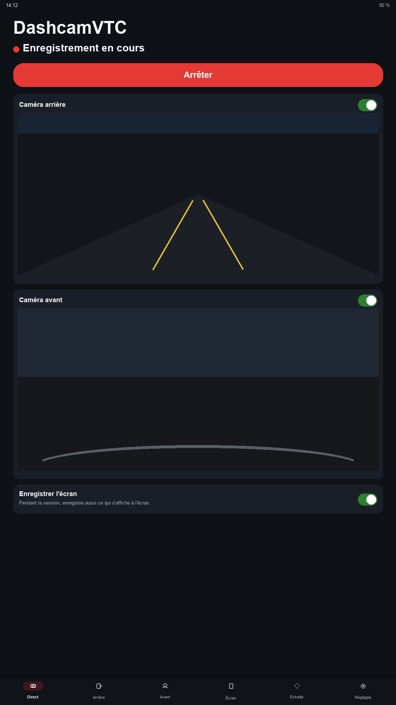
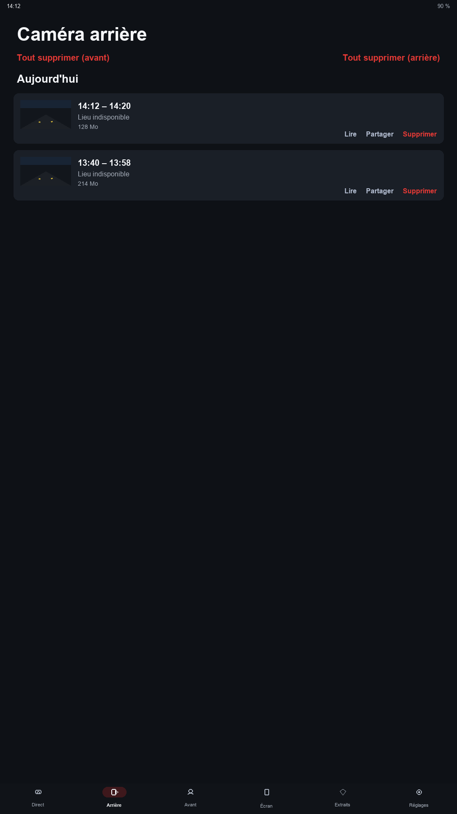
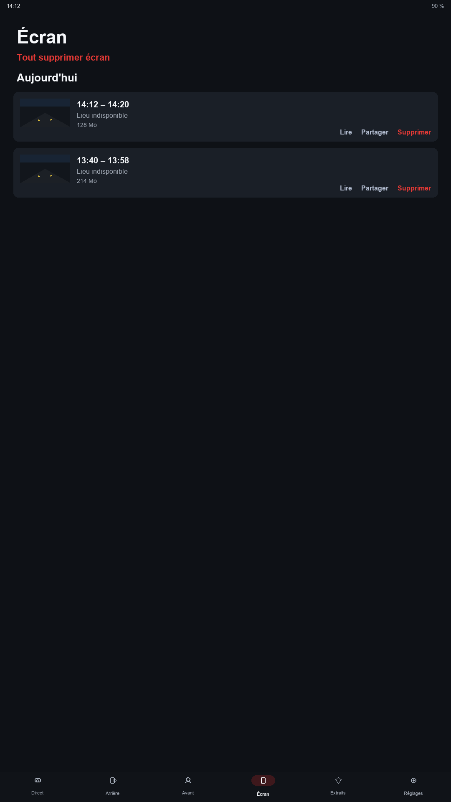
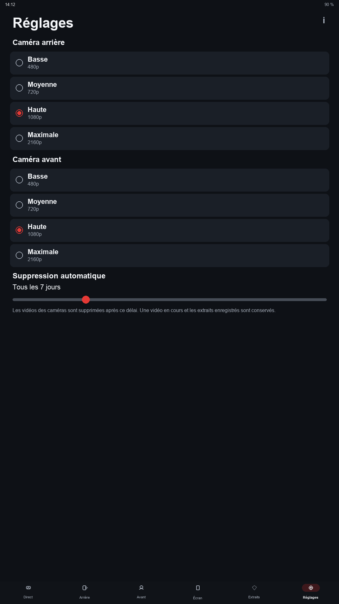

Ce que l'application fait
- Enregistre la caméra arrière, la caméra avant et le micro.
- Peut enregistrer aussi ce qui s'affiche à l'écran pendant la session.
- Continue quand vous quittez l'application, avec une notification et un bouton flottant.
- S'arrête quand l'écran s'éteint, enregistre la vidéo, et reprend au réveil.
- Les fichiers restent sur le téléphone. Vous pouvez les lire, les partager, en couper une partie, ou les supprimer.
- Les extraits enregistrés ne sont pas supprimés automatiquement. Les autres vidéos peuvent l'être après le délai choisi.
- Qualité au choix : 480p, 720p, 1080p ou 2160p.
Prix
Le premier mois est offert. Ensuite 1 € par mois, via Google Play. Vous pouvez annuler dans Google Play.